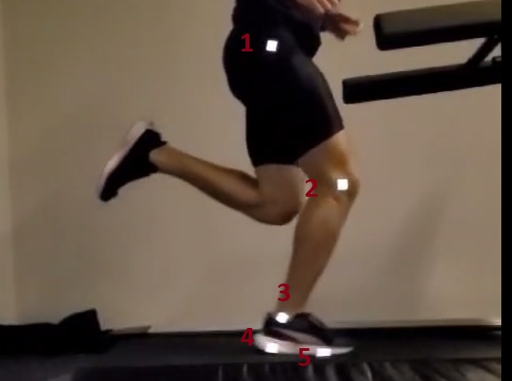

Proceso de captura
Cuando se carga el video este comienza a reproducirse automáticamente.
Para comenzar la captura debemos esperar al momente en que el pie del
lado de la captura se encuentra en pleno apoyo medio. En ese momento
presionamos "analizar". Contamos cinco cliclos y presionamos detener.
Una vez finalizada la captura vamos a la pestaña análisis y allí
encontraremos los resultados.
Datos iniciales capturados y guardados en el storage
Cuando se finaliza la captura se almacenan en el local storage una
serie de propiedades del video ademas de los datos
- Ancho del video: px
- Alto del video: px
- Cuadros por segundo: fps
- Datos de la captura:
Datos de captura
-
corresponde a un arreglo de objetos. cada objeto tiene las
siguientes claves y valores
- { x: 257, y: 607, milliseconds: 1721668233019 }
-
x corresponde a los datos trasversales, y a los verticales y
millisecons al instante en milisegundos en que ocurre el evento.
Se guardan en un arreglo como el que sigue:
[
{x: 257, y: 607, milliseconds: 1721668233019}
{x: 321, y: 476, milliseconds: 1721668233019}
{x: 262, y: 352, milliseconds: 1721668233019}
{x: 251, y: 324, milliseconds: 1721668233019}
{x: 299, y: 318, milliseconds: 1721668233019}
{x: 257, y: 607, milliseconds: 1721668233030}
{x: 318, y: 474, milliseconds: 1721668233030}...
Duración del video
puede obtenerse despues del registro restando la marca de tiempo del
último elemento del array menos el primero:
const videoDifDuration =
(array[array.length - 1].milliseconds - array[0].milliseconds) / 1000;
En este caso sería s
La duración del video corresponde al tiempo que transcurre durante la
captura. El tiempo se captura en milisegundos. Si se graba con captura
a fps normales, con ese tiempo se podría realizar el análisis. En el
caso de capturarse en cámara lenta debemos hacer la conversión al
tiempo real.
Si la captura se realiza a 240 sería:
Duración real = (duración de registro / 1000)* fps / 240
donde
-
Duración del registro es la duracion del video en milisegundos
- fps son los cuadros por segundo del video
- 240 son los fps con los cuales fue grabado el video
En este caso sería: s
Intervalo de tiempo
El intervalo de tiempo corresponde al tiempo transcurrido entre cada
evanto de captura. tenemos dos formas de obtenerlo:
- Asuminedo que el intervalo corresponde a 1 segundo / 240 fps
-
Dividiendo la duración real del video por la cantidad de datos
Primer problema: los datos no vienen separados por instantes
El primer problema que nos encontramos es que los datos vienen de la
manera siguiente:
const array = [
{x: 257, y: 607, milliseconds: 1721668233019},
{x: 321, y: 476, milliseconds: 1721668233019},
{x: 262, y: 352, milliseconds: 1721668233019},
{x: 251, y: 324, milliseconds: 1721668233019},
{x: 299, y: 318, milliseconds: 1721668233019},
{x: 257, y: 607, milliseconds: 1721668233030},
{x: 318, y: 474, milliseconds: 1721668233030},
{x: 256, y: 352, milliseconds: 1721668233030},
{x: 245, y: 324, milliseconds: 1721668233030},
{x: 293, y: 318, milliseconds: 1721668233030},
{x: 256, y: 607, milliseconds: 1721668233042},
{x: 315, y: 473, milliseconds: 1721668233042},
{x: 251, y: 352, milliseconds: 1721668233042},
{x: 240, y: 324, milliseconds: 1721668233042},
{x: 287, y: 318, milliseconds: 1721668233042}
]
En cada instante de tiempo se capturan vatrios datos. Pero podemos ver
en el array anterior que los datos se pueden agrupar por su marca de
tiempo en grupos de a cinco. La marca de tiempo de los elementos de
cada grupo es identica o muy cercana.
Cada elemento de estos grupos corresponde a un marcador rastreado y
como la lectura se hace de arriba abajo y de izquierda a derecha
podemos indentificarlos perfectamente.
- El primer elemento corresponde al trocanter mayor
- El segundo elemento al cóndilo externo
- El tercer elemento al maleolo
- El cuarto al calcáneo
- El quinto al quinto metatarsiano

Función para separar el array en grupos de a cinco
Creamos una función que separa en arreglos de a cinco. Detecta las
marcas de tiempo cercana y las pushea en un mismo arreglo
const groups = dividirEnGroups(array);
La funcion "dividirEnGrupos recibe el array original y genera otro
array con arrays de cinco objetos de la siguiente manera"
const groups = [
[
{x: 330, y: 480, milliseconds: 1721683087757},
{x: 260, y: 610, milliseconds: 1721683087757},
{x: 285, y: 352, milliseconds: 1721683087757},
{x: 276, y: 324, milliseconds: 1721683087757},
{x: 325, y: 319, milliseconds: 1721683087757},
],
[
{x: 260, y: 610, milliseconds: 1721683087769},
{x: 330, y: 480, milliseconds: 1721683087769},
{x: 285, y: 352, milliseconds: 1721683087769},
{x: 276, y: 324, milliseconds: 1721683087769},
{x: 325, y: 319, milliseconds: 1721683087769},
],
[
{x: 259, y: 610, milliseconds: 1721683087782},
{x: 328, y: 479, milliseconds: 1721683087782},
{x: 280, y: 352, milliseconds: 1721683087782},
{x: 271, y: 324, milliseconds: 1721683087782},
{x: 319, y: 319, milliseconds: 1721683087782},
],
[
{x: 259, y: 610, milliseconds: 1721683087803},
{x: 328, y: 479, milliseconds: 1721683087803},
{x: 280, y: 352, milliseconds: 1721683087803},
{x: 271, y: 324, milliseconds: 1721683087803},
{x: 319, y: 319, milliseconds: 1721683087803},
]
Segundo problema: los datos repetidos
Como se ve el "groups" tenemos datos repetidos. Esto es porque el la
función de rastreo puede tomar hasta dos muestras por frame. Este
hecho nos va a dar un error cuando ingresemos intervalos de tiempo
para hacer calculos en trozos de arreglo, por ejemplo en alguna
integración o derivación. Por eso vamos a filtrar los datos
repetidos.
const { realTime, correctedInterval, correctedGroups } = obtenerTiempoEIntervaloReal(groups, duration);
Esta función recibe dos parametros: el array con los grupos y la
duración del video
Y entrega tres elementos: el tiempo real del video, el intervalo
corregido, y los grupos sin repeticiones
Como referencias del tiempo tenemos:
-
el intervalo corregido que es un valor único que sale de dividir
el tiempo real por la cantidad de datos
-
un array con los intervalos entre cada cuadro que es variable.
Separar los grupos por marcador
Este procedimiento se realiza en dos etapas:
-
Se crea una función que toma el arreglo original y separa por
marcador.
A cada arreglo del marcador se le asigna una letra griega. Esto es
porque originalmente se empezó con el análisis de los angulos
- alpha para el trocanter
- beta para el códilo
- gamma para el maleolo
- lamnda para el calcáneo
- epsilon para el quinto matatarsiano
const { alpha, beta, gamma, lambda, epsilon } = dividirPorMarcador(array);
-
Cuando ya se tienen los grupos corregidos, se vuelven a iterar los
arreglos por marcador y de filtran los repetidos.
const { newAlpha, newBeta, newGamma, newLambda, newEpsilon } = filtrarRepetidosMarcadores(alpha, beta, gamma, lambda, epsilon, correctedGroups)
Esto es porque resulta mas simple eliminar los repetidos de los
marcadores a partir de los grupos
Ángulos articulares
Una vez que tenemos cada marcador identificado y con el tiempo
corregido podemos obtener los ángulos
Los ángulo lo calculamos con:
cos angulo = u x v / |u|*|v|
Trayectoria de los marcadores
Una vez que tenemos los datos de los marcadores que como sabemos
tiene tres elementos: posición en x, posición en y y los
milisegundos, vamos a crear dos arrays por cada marcador, con las
posiciones en x y en y. y lo vamos a graficar
Análisis de la trayectoria
Índices de referencia
Para establecer un punto de partida buscamos una media estadistica
de la trayectoria en "y" del quinto metatarsiano
La media de la trayectoria en y es de:
Los puntos de corte entre la media y la trayectoria en y de quinto
determinan los índices de referencia. Al primer corte lo denominamos
index0 y es la referencia para comenzar el análisis. Los índices los
encontramos con la siguiente función:
const index1 = epsilonY.findIndex((el, index) =>
el < meanValue && index > index0);
En la siguiente tabla encontramos los índices, los valores en y, en
x y la marca de tiempo
| Index |
índice |
tiempo |
posición en y |
posición en x |
Para poder limitar mas el analisis generamos arrays entre los
indices. En este caso nos interesan los arreglos con índices
inferiores impares: 1-2, 3-4, 5-6, 7-8 ... que van a contener a los
máximos del epsilonX y corresponden al punto mas adelantado del pie.
Intervalo entre un indexImpar-indexpar
El objetivo es aislar el intervalo donde se encuentra el contacto
inicial y el toeoff. Para eso habiamos generado los arreglos entre
los índices y determinamos que estos dos momentos del ciclo se
encuentran entre el punto mas adelantado de la trayectoria en x del
quinto metatarsiano (epsiloX) y el index-par posterior.
Aislamos el segmento que se cruza